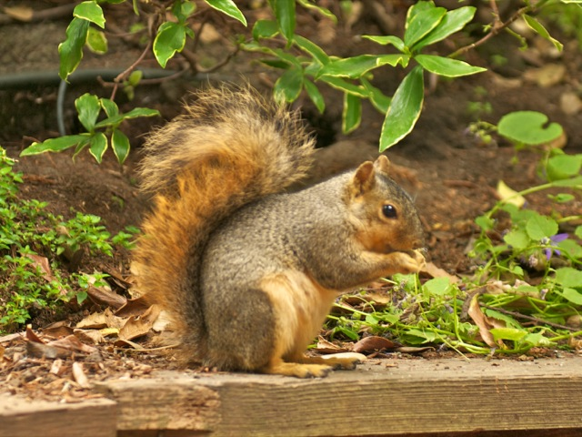

The Fox Squirrel is a non-native introduced from the East. It feeds on nuts. This species nests high in trees. Its breeding season runs from January through February and also from August through September. In general, this rodent has a rusty-yellow body with a pale yellow orange belly. It is noted for its bushy tail with tawny tips.
The fox squirrel (Sciurus niger), found throughout the state, is the largest of the 4 tree squirrel species in Indiana. The other tree squirrels are the gray squirrel (Sciurus carolinensis), red squirrel (Tamiasciurus hudsonicus), and southern flying squirrel (Glacomys volans).
GENERAL CHARACTERISTICS
In contrast with the gray squirrel, the fox squirrel (Sciurus niger) is brawny, less nervous and adjusts well to small woodlots in farmland or suburbia. Upper body parts are a grizzled black-brown-orange combination with brown under parts. This color may vary as it does in extreme southern Indiana where occasionally fox squirrels will be colored black above, white below, may have white ears and nose, or have a white tail.
Although fox squirrels are often seen on the ground, they climb well and are seldom found far from trees. They rise and feed later than other squirrels and are more active throughout the day. Their conspicuous barking and squalls often betray their presence.
REPRODUCTION
Tree cavities, many formed by woodpeckers, are remodeled for winter dens and often serve as nurseries for late winter litters. If existing trees lack cavities, leaf nests, known as dreys, are built by cutting twigs with leaves attached and weaving them into warm waterproof shelters. Dreys enable fox squirrels to successfully occupy without large mature trees. Similar leafy platforms are build for summer loafing. Old-timers call these platforms “cooling beds.”
Fox squirrels breed in December and January and again in early summer, if well nourished, and produce about 3 pups per litter. Young are born in every month but December and January, and squirrels born in early litters may breed and produce young of their own in their first year of life. In eight to twelve weeks, young are weaned and begin to fend for themselves. Squirrels produce fewer offspring than other mammals but are more successful in rearing them. Rabbits reproduce faster and quail produce more offspring, but typically both suffer a higher mortality rate. Fox squirrels may live six years in the wild and longer in captivity.
FOOD HABITS
Fox squirrels eat much the same foods as other tree squirrels. White oak acorns, hickory nuts and beechnuts are also preferred, but a wide variety of seeds, berries and wild fruits are consumed when choice items fall. When frost, insects, droughts and other unfavorable conditions cause wild foods to fail, squirrel population can decline. However, fox squirrels have adapted to human provided food sources. Since they typically live closer to cropland than other squirrel species, corn can become a main part of their diet. Additionally, many have taken advantage of the boom in popularity of bird feeding.
Squirrels don’t hibernate, so they must depend upon buried acorns and nuts, or bird feeders, for winter fare. Many acorns buried in the fall are never found and later sprout to become trees. In addition to burying nuts, squirrel carry seeds and berries to new areas and are known as important dispersers of plants seeds.
POPULATION UPS AND DOWNS
In pre-settlement times, fox squirrels only occupied the savannah habitat found along the fringes of the prairie in what would later be northwest Indiana. As settlements developed and deforestation occurred, the fox squirrel expanded its range. It has been less than a century since this species moved into central and southern counties. This timber removal, which nearly spelled the end for gray squirrels, allowed fox squirrels to move into every corner of the state. Somewhere between solid virgin forests and total timber destruction, a favorable balance of cover enables fox squirrels to achieve optimal population levels. Recently, losses of large mature trees and fencerow or hedgerow habitat for increased crop production or urban development have caused fox squirrel numbers to diminish in some parts of the state.
CONFLICTS WITH PEOPLE
To the dismay of many homeowners and birdwatchers, fox squirrels are notorious for raiding bird-feeders and gorging themselves. “Squirrel-proof” feeders are available, and some are quite affective.
Because bird-feeders have provided a food source in areas that may lack adequate den or nest trees, squirrels are increasingly invading homes, particularly attics. Squirrels will need to be removed from buildings before entry points can be sealed. Numerous products are specifically labeled for use as squirrel repellents. Do not use products with noxious chemicals if they are not labeled for use on squirrels, such as mothballs. However, no commercial product is completely effective in repelling squirrels from buildings. In addition to these commercial products, homeowners could try natural repellents like chili or cayenne pepper in the attic or outside the home, or even use a strobe light in the attic. The most effective way to remove squirrels from buildings is to find out how they are getting in and out, and trap them at the source. It is best to set traps, live or kill, to catch them as they exit the building. Homeowners may want to contact a professional pest control service to conduct or assist in this effort. Once all the squirrels have been removed, permanently seal the entry point; tightly woven wire mesh (not chicken wire) will do the trick if covering a vent or chimney.
In urban areas, fox squirrels become used to people and would appear to make good pets, but fox squirrels are wild animals that will bite and can carry disease. Do not try to pick up squirrels.
PREVENTION AND CONTROL
Resident landowners and tenants can live-trap a fox squirrel that is causing damage on their own property without a permit from the DNR. The fox squirrel must be euthanized or released within the county of capture on property in which you have permission. In order to prevent the spread of disease, the DNR encourages homeowners to safely and humanely euthanize the fox squirrels, if possible. Live-traps can be purchased from hardware stores and garden centers. If you do not want to trap the squirrel yourself, contact a licensed nuisance wild animal control operator.
Occasionally, squirrels may enter a house through a pet door. Quietly open windows and a door through which the animal may exit and close the doors that provide access to other parts of the house before leaving the room. Wait quietly for the animal to escape.
If a squirrel is already in your chimney or attic, they will need to be removed from the building before entry points can be sealed. Numerous products are specifically labeled for use as squirrel repellents. Do not use products with noxious chemicals if they are not labeled for use on squirrels, such as mothballs. However, no commercial product is completely effective in repelling squirrels from buildings. In addition to these commercial products, homeowners could try natural repellents like chili or cayenne pepper in the attic or outside the home, or even use a strobe light in the attic. The most effective way to remove squirrels from buildings is to find out how they are getting in and out, and trap them at the source. It is best to set traps, live or kill, to catch them as they exit the building. Again, homeowners may want to contact a licensed nuisance wild animal control operator to conduct or assist in this effort. Once all the squirrels have been removed, permanently seal the entry point; tightly woven wire mesh (not chicken wire) will do the trick if covering a vent or chimney. Trim overhanging tree limbs to prevent easy access to your roof and attic.
Fox squirrels have been known to strip the bark from the upper branches of trees. This behavior typically occurs in early spring and early fall in response to their increased need for sodium. Sap, flowing up from the roots into the branches of trees in the spring and energy rich sap being produced in the fall, contain higher concentrations of sodium. Squirrels will peel back the thinner, more pliable bark, on the younger tree branches to get at the sodium-rich sap. Certain glues used in making plywood, as well as chemicals found in electric wire insulation, may also contain sodium and lead to squirrels chewing on these objects. Since the damage is directly related to squirrels needing more sodium (salt), the problem can often be mitigated by making alternative sources of salt more readily available. Small mineral/salt blocks or rings can be purchased from local pet supply stores and placed at the base of the trees being damaged or in the crooks of easily-accessible branches. Soak wooden stakes in salt water for 24 hours and then either place the stakes in the ground around the affected trees or wire them to the tree trunks.
Indiana Department of Natural Resources <http://in.gov/dnr/fishwild/3373.htm>
THE DELMARVA FOX SQUIRREL
The Delmarva Peninsula fox squirrel is named for the area defining most of its historic range: the peninsula between the Chesapeake Bay and Atlantic Ocean that includes Delaware, eastern Maryland and eastern Virginia. This subspecies of fox squirrel historically occurred throughout the peninsula and into Pennsylvania.
By 1967, they inhabited only 10% of the Delmarva Peninsula and were placed on the first endangered species list. Forest clearing for agriculture, timber harvest and hunting at the turn of the century contributed to their decline. Recovery efforts are helping to turn the tide and now the population range is expanding.
WHAT IS THE DELMARVA FOX SQUIRREL?
The Delmarva fox squirrel (as it is more commonly called) is a large squirrel that lives in mature hardwood and pine forests throughout the farmlands of the Delmarva Peninsula. It can grow to 30 inches (with half of that being the tail) and can weigh 1 to 3 pounds. The squirrel's coat is typically a frosty silver-gray color but can vary in color to almost black. The only other tree squirrel on the Delmarva Peninsula is the common gray squirrel (Sciurus carolinensis) which is often seen in backyard bird feeders and suburban settings. The widespread gray squirrel is smaller (16 to 20 inches), has a narrower tail and brownish gray fur.
Although the Delmarva fox squirrel is a tree squirrel, it spends considerable time on the ground foraging for food in woodlots, and will take food from farm fields. Less agile than the gray squirrel, the Delmarva fox squirrel ambles along the forest floor more than leaping from branch to branch. They are also quieter than the common gray squirrel. The home ranges of fox squirrels vary considerably, but average about 40 acres.
The Delmarva fox squirrel occurs in mature forests of mixed hardwoods and pines, with a closed canopy and open understory. The large trees provide abundant crops of acorns and seeds for food and cavities for den sites. Delmarva fox squirrels generally occur in woodlands associated with farmland areas and do not typically occur in suburban settings.
WHAT IS BEING DONE TO HELP THEM RECOVER?
A major focus of the recovery effort has been to increase the population size and distribution of this species by reestablishing populations within the historic range. Following a study of the historic distribution, 16 reintroductions were made in Maryland, Delaware, Virginia and Pennsylvania. Twelve of these reintroductions have succeeded 10-15 years after their establishment.
In addition, observations of Delmarva fox squirrels have occurred in new areas where they were previously unknown. Thus the distribution is increasing because of new sightings of animals on the edge of the range and reintroductions. Currently the Delmarva fox squirrel occurs in eight counties on Maryland's Eastern Shore (all eastern shore counties except Cecil), Sussex County in Delaware and Accomack County in Virginia (Chincoteague National Wildlife Refuge).
MONITORING RECOVERY
Monitoring changes in the population of this quiet, reclusive animal is challenging. Trapping and marking live animals provides the most information about a population and is the best technique to determine whether Delmarva fox squirrels occur in a particular location. Monitoring the use of artificial nest boxes has also helped to determine their long-term presence on some sites. In addition, recording all sightings of animals across their range using computer mapping programs has allowed better mapping of their distribution and easy updating of any changes.
New monitoring techniques are also being developed. Motion-triggered cameras can be placed in the woods and the resulting pictures provide evidence that Delmarva fox squirrels occur without the time and cost that trapping requires. Another technique under development is "hair-catcher" stations that can be baited and placed in the forest to collect hair. Samples collected can be taken back to a lab for identification. Research has already determined that the DNA in Delmarva fox squirrel hair can be distinguished from the gray squirrel. Development and testing of this monitoring technique is ongoing.
THE FUTURE FOR DELMARVA FOX SQUIRRELS
The Delmarva Peninsula fox squirrel can have a bright future with a little help. The successful recovery of the Delmarva fox squirrel depends on the willingness of landowners to provide habitat for these squirrels. Fortunately, the Delmarva fox squirrel can thrive in a landscape that is managed for farming and sustainable timber harvest. Timber harvests should be conducted so that some habitat is left for the squirrels. Keep clearcuts small and scattered in the landscape and make sure there is ample forest left for squirrels to move into.
Developers can also assist with conservation efforts by minimizing forest clearing, leaving the largest areas of mature forest intact, and maintaining corridors between woodlots. Maintaining and enhancing the forests along streams also maintains habitat corridors that can help populations of Delmarva fox squirrels stay connected. Efforts to recover the Delmarva fox squirrel will help protect not only the squirrel, but also other species that depend on the native forests of the Delmarva Peninsula.
WHERE MIGHT YOU SEE A DELMARVA FOX SQUIRREL?
To see a Delmarva fox squirrel and learn more about this unique resident of the Delmarva Peninsula, visit any of the following National Wildlife Refuges in the area: Chesapeake Marshlands Complex (Dorchester County MD) comprised of Blackwater National Wildlife Refuge (NWR) and the Chesapeake Island Refuges (Martin and Susquehanna NWRs and their divisions).); Chincoteague (Accomack County, Virginia); and Prime Hook (Sussex County DE). Also, be on the look out in the woods and field edges throughout its range.
U.S. Fish & Wildlife Service <http://chesapeakebay.fws.gov>
©2013 West Eastborn Indiana Elementary Class 13-C